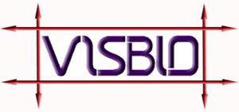

v1.0 beta 2a, built August 27, 2002
VisBio was written by Curtis Rueden of the Laboratory for Optical and Computational Instrumentation (LOCI), White Laboratory of the Laboratory of Molecular Biology, University of Wisconsin-Madison.
VisBio was built in pure Java using the VisAD visualization toolkit, written at the Space Science and Engineering Center by Bill Hibbard and the SSEC Visualization Project.
Links and Contact Information
VisBio - http://www.loci.wisc.edu/visbio/
VisAD - http://www.ssec.wisc.edu/~billh/visad.html
LOCI - http://www.loci.wisc.edu/
White Laboratory - http://www.molbio.wisc.edu/white/
Curtis Rueden - ctrueden@facstaff.wisc.edu
Kevin Eliceiri - eliceiri@facstaff.wisc.edu